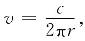
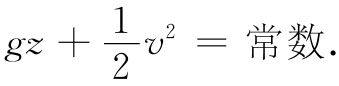
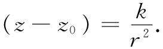

在上一节的开头我们曾经看到，若不可压缩流体中不存在环流，则流动满足下列两个方程：
▽·v=0， ▽×v=0. （40.19）
它们与自由空间中的静电或静磁方程组相同。当没有电荷时，电场的散度为零，而电场的旋度则总是等于零的。若没有电流，磁场的旋度为零，而磁场的散度则永远等于零。因此，方程组（40.19）与静电学中关于E或静磁学中关于B的方程组具有相同的解。事实上，在§12-5中，作为对静电学的类比，我们曾解过流体流经一个球体的那种流动问题。该电学模拟就是一匀强电场加上一偶极子场。这偶极子场被调整到使得垂直于球面上的流速为零。对经由一根柱体的同样的流动问题，可以按相似的办法即利用一个适当的线型偶极子场和一均匀流场来算出。对于在远处的流速——包括大小和方向——为恒量的那种情况，这一种解答是正确的。这个解的示意图为图40-11（a）。
当条件使得在远处的流体沿着围绕该柱体的圆周运动时，对于围绕柱体的流动就有另一个解。于是，流动处处都是圆周，如图40-11（b）所示。这样的流动有一个围绕着该柱体的环流，尽管此时在流体中 ▽×v仍为零。怎样才能有环流而没有旋度呢？围绕该柱体有环流是因为环绕任一包围 柱体在内 的回路的v的线积分不等于零。同时，v围绕任一不 包含该柱体在内的闭合路径的线积分都是零。当我们过去求围绕一根导线的磁场时，也曾见过这相同的事情。在导线外B的旋度为零，虽然围绕一条包围该导线在内的路径B的线积分却不为零。在围绕柱体的无旋环流中的速度场，与围绕一根导线的磁场恰好相同。对于以柱体的轴心为中心的一条圆周路径来说，速度的线积分为
∮v·ds=2πrv.
在无旋流动中这一积分必然与r无关，让我们把这一常数值称作c，那么便有
 （40.20）
式中v是切向速度，而r是距轴的距离。
图40-11 （a）理想流体正流经一根柱体；（b）围绕柱体的环流；（c）是（a）和（b）两者的叠加
关于围绕一小孔的流体环流可以做一个精彩的演示。你取一个在底面中心处开有一个排水孔的透明柱形桶。把这个桶装满了水，用一根棍子在其中搅起一些环流，然后拉开孔塞，你便会获得如图40-12所示的那种漂亮的效应（你在浴盆中也曾多次见过与此相类似的东西）。虽然你在开始时加入某个ω，但由于黏滞性的原故它不久就会消失而流动变成无旋的了——尽管此时还有围绕着该排水孔的环流。
图40-12 带有环流的水从桶中排出
根据理论，我们能够算出水的内表面形状。当一个水的质点向中心流入时，它会获得速率。根据式（40.20），该切向速度与1/r成正比——这恰好出自角动量守恒——像溜冰者缩回两只手臂一样，并且径向速度也表现为1/r的形式。若略去切向运动，就有水沿着径向朝中心流进孔里，根据▽·v=0，可以推断出径向速度会正比于1/r。因此，总速度也与1/r成正比，从而水将沿着阿基米德螺线流动。空气与水间的界面全都处于大气压强下，因而根据式（40.14）它必须具有这么一种性质：

但由于v与1/r成正比，从而该表面形状为：

一个有趣的地方——这一般来说是不正确的 ，但对于不可压缩的无旋流动则是正确的——乃是：若我们有两个解，则它们之和也是一个解。这所以正确，是因为方程组（40.19）是线性的。流体动力学的完整方程组（40.8）、（40.9）和（40.10）都不是线性的，这就造成巨大的差别。然而，对于围绕柱体的无旋流动来说，我们可以将图40-11（a）的流动叠加于图40-11（b）的流动之上，而获得一个如图40-11（c）所示的那种新型流动图样。这种流动特别有趣，在柱体上面的流速比在其下面的要高。因此，在上面 的压强就比在下面的低 。这样，当一个围绕着柱体的环流与一个纯水平方向的流动相结合时，就会有一个净的垂直方向的力 作用于该柱体上——这个力被称为升力 。当然，按照我们关于“干”水的理论，若没有环流，则就不会有净力作用于任何物体上。